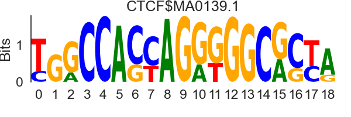

| Rank | Motif(s) | Motif logo |
Signed -log10 p-value [90% CI] |
# mutation (% total seq) | # pos mutation (% total mutation) | # neg mutation (% total mutation) | Median score difference | Mean score difference | Score difference distribution positive seq. - negative seq. |
|---|---|---|---|---|---|---|---|---|---|
| 1 | CTCF | CTCFL | CTCFL |  |
24.67 [21.1, 28.17] |
234 (59.09%) | 206 (88.03%) | 28 (11.97%) | 2.68 | 2.16 |